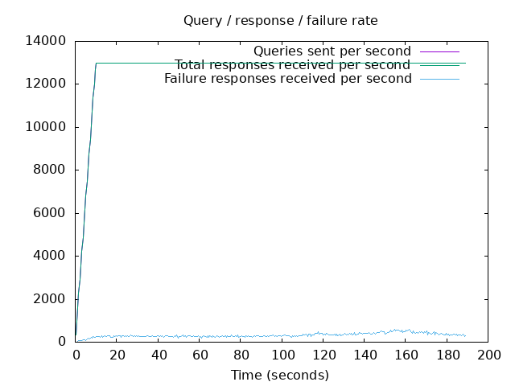
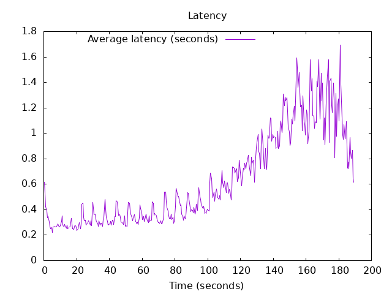

DNS Resolution Performance Testing Tool Version 2.14.0 [Status] Command line: resperf -P 20250620-1256.gnuplot -M dot -s 79.127.218.224 -d domains_shuffled.list -C 500 -m 13000 -b 1400 -q 1000000 -R -r 10 -c 180 -t 30 -F 0 [Status] Sending [Status] Ramp-up done, sending constant traffic [Status] Waiting for more responses [Status] Testing complete Statistics: Queries sent: 2404999 Queries completed: 2404999 Queries lost: 0 Response codes: NOERROR 1613678 (67.10%), SERVFAIL 61126 (2.54%), NXDOMAIN 730195 (30.36%) Run time (s): 204.332441 Maximum throughput: 13000.000000 qps Lost at that point: 0.00% Connection attempts: 620 (619 successful, 99.84%)
 